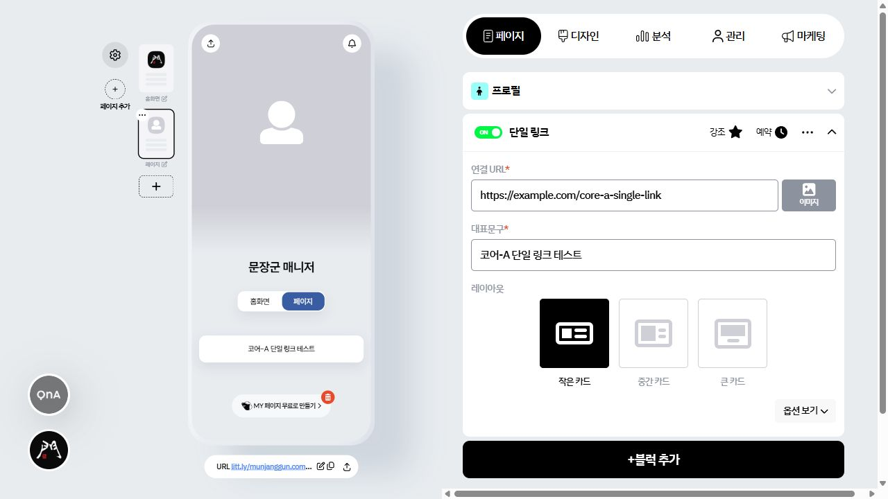
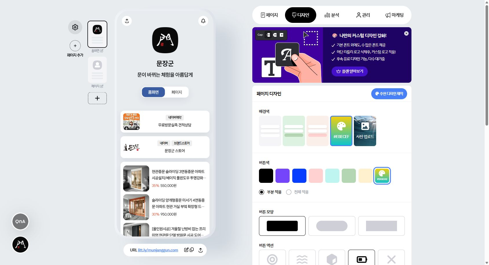
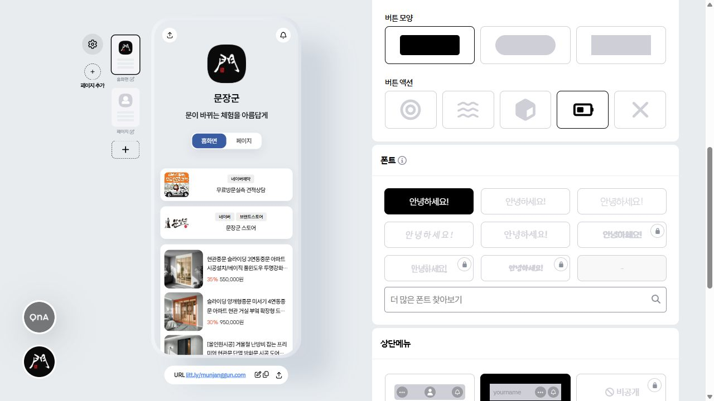
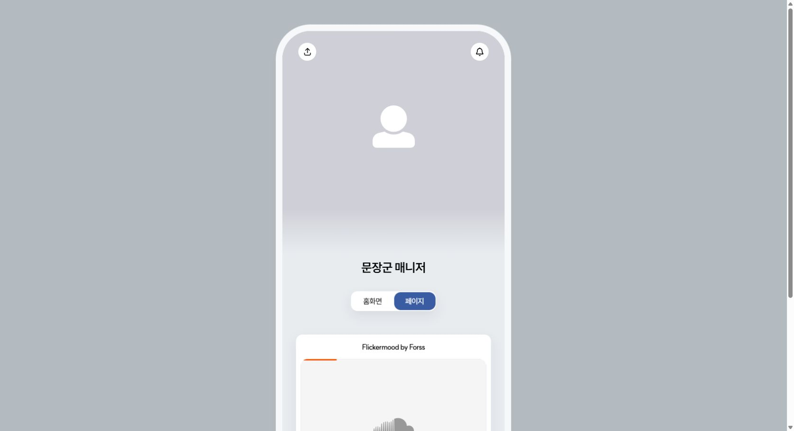
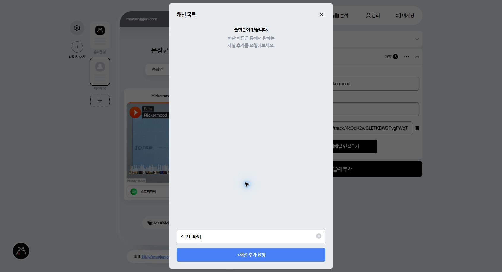
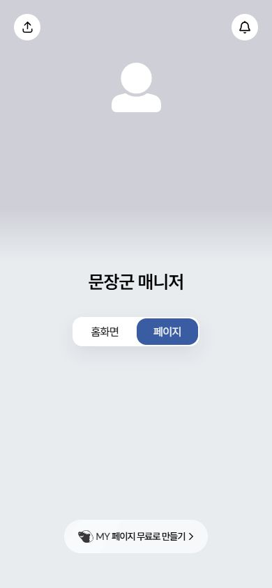

SUPERSEDED (2026-08-14)
이 HTML은 1차 조사 검수본이며 현재 완료 판정이나 구현 권위가 아닙니다. 최신 상태는
이 HTML은 1차 조사 검수본이며 현재 완료 판정이나 구현 권위가 아닙니다. 최신 상태는
full-product-research/RESEARCH_STATE.md와 COVERAGE.md를 확인하세요.캡처 출처 안내
인앱 브라우저 직접 스크린샷은 CDP 제한시간 초과로 저장되지 않았습니다. 아래 이미지는 사용자가 제공한 화면과 이전 조사 세션에서 선별·검수한 보조 캡처입니다. 현재 주 세션의 직접 증거는 142개 DOM·접근성·치수 파일이며, 두 증거군을 섞어 표기하지 않습니다.
인앱 브라우저 직접 스크린샷은 CDP 제한시간 초과로 저장되지 않았습니다. 아래 이미지는 사용자가 제공한 화면과 이전 조사 세션에서 선별·검수한 보조 캡처입니다. 현재 주 세션의 직접 증거는 142개 DOM·접근성·치수 파일이며, 두 증거군을 섞어 표기하지 않습니다.
30/30조사 단위
24실제 블록 유형
142직접 원시 증거 파일
50출처 구분 캡처
조사 상태
| ID | 영역 | 판정 | 직접 확인한 핵심 | 안전 경계/남은 항목 |
|---|---|---|---|---|
| G01 | 페이지 | VERIFIED/PARTIAL | 3열 편집기, 레일, page1, 프로필 | 무료 한도 1/1로 추가 페이지 CRUD 미실행 |
| G02 | 디자인 | VERIFIED/PARTIAL | 색, 사진, 버튼, 폰트, 상단메뉴, 로고와 치수 | 모든 값을 바꾸고 복원하는 회귀는 구현 QA |
| G03 | 분석 | PARTIAL | 지표, 유입, 블록 순위, 전체보기 유료 모달 | 계정 수치 마스킹, 다운로드 미실행 |
| G04 | 관리 | PARTIAL | 고객/매출 요약과 고객 상세 표 | 실제 고객 행 조작 미실행 |
| G05 | 마케팅 | PARTIAL | 이메일 수신자 선택, 인스타 자동화 모달 | 실제 발송·계정 연결 미실행 |
| B01 | 페이지 생명주기 | VERIFIED/PARTIAL | 편집/공개 직접 진입과 빈 페이지 | 플랜 제한 |
| B02 | 단일 링크 | VERIFIED | 입력, 3레이아웃, 옵션, 강조, 예약, 메뉴, 삭제, 공개 | OG 경합 회귀 |
| B03 | 그룹 링크 | VERIFIED/PARTIAL | 5레이아웃, 접기, 하위 링크 모달 | 다중 공개 레이아웃 재검증 |
| B04 | SNS | PARTIAL | 기본 행과 전체 채널 선택기 | 실제 채널별 공개 링크 |
| B05 | 동영상 | PARTIAL | YouTube·Vimeo·TikTok 안내, 3레이아웃, 자동재생 | Instagram·Naver Clip은 확장 |
| B06 | 텍스트 | VERIFIED | 실제 ON/OFF와 공개 노출 동기화 | 긴 문구 경계 |
| B07 | 갤러리 | PARTIAL | 필수 이미지와 5레이아웃 활성 조건 | 실제 다중 업로드 |
| B08 | 여백 | VERIFIED/PARTIAL | 5스타일과 50px 기본값 | 정확한 저장 debounce |
| B09 | 음악 | VERIFIED | 3제공자, 중복, 예약, 오류, 공개, 모바일, 삭제 | 외부 임베드 장애 fallback |
| B10 | 지도 | PARTIAL | 주소 검색 구조 | 실제 위치 선택 |
| B11 | 파일 공유 | PARTIAL | 설명·이미지·필수 파일·옵션 | 업로드/다운로드 |
| B12 | 문의 | VERIFIED/PARTIAL | 수집 필드와 문의목록 모달 | 실제 제출 |
| B13 | 일정 | VERIFIED/PARTIAL | 일정명·시작/종료·링크 모달 | 실제 일정 공개/알림 |
| B14 | 고객정보 | PARTIAL | 이메일·휴대폰·이름 수집 | 실제 제출/동의 |
| B15 | 연락처 | VERIFIED/PARTIAL | 전화·이메일·메신저 전체 채널 선택기 | 채널별 URL 정규화 |
| B16 | 공지 | VERIFIED/PARTIAL | 한줄형/팝업형과 연결 URL | 실제 팝업 타이밍 |
| B17 | 검색 | VERIFIED/PARTIAL | 가이드 문구와 기본 검색창 | 검색 범위·결과 |
| B18 | 방명록 | VERIFIED/PARTIAL | 글쓰기 화면과 답글/삭제 빈 모달 | 실제 작성·권한 |
| B19 | 국내 판매 | VERIFIED/PARTIAL | 4유형, 상품/VOD 등록 모달, 실물 배송비 | 계좌·결제 |
| B20 | 해외 판매 | PARTIAL | USD/JPY와 4판매 유형 | 통화별 결제 |
| B21 | 후원 | PARTIAL | 최소 3,000원, 버튼, 계좌 | 결제·환불 |
| B22 | 예약 | VERIFIED/PARTIAL | 1:1/그룹과 요일별 시간표 | 구매·중복·타임존 |
| B23 | 광고 | PARTIAL | 작은/큰/2열 카드 | 계좌·정산 |
| B24 | 멤버십 | PARTIAL | 상품·설명·전달메시지·계좌 | 정기결제·해지 |
| B25 | 스마트스토어 | VERIFIED/PARTIAL | 실제 상품, 상품별 ON/OFF, 5레이아웃 | 동기화 실패 fallback |
화면 증거

{kind=link}

{kind=link}

{kind=link}


{kind=link}

{kind=link}

{kind=link}

원시 증거 바로가기
24개 블록 선택기
프로필 펼침 상태
디자인 치수·색·상태
고객 관리 상세 모달
단체 이메일 수신자 선택
문의목록 추가 모달
일정 추가 모달
연락처 채널 선택기
상품 등록 모달
VOD 강의 등록 모달
예약 시간표 모달
최종 원상복구 감사
문장군 의도적 확장
| 항목 | 판정 | 확정 구현 규칙 |
|---|---|---|
| 페이지 트리 | INTENTIONAL | parent_id, sort_order로 쇼룸식 탐색 계층 |
| 공개 URL | INTENTIONAL | 계층과 무관한 /l/{slug} |
| 독립 진입 | INTENTIONAL | 모든 노드는 부모를 거치지 않아도 완전한 페이지 |
| 동영상 | EXTENSION | 원형 완성 뒤 Instagram·Naver Clip 제공자 추가 |
| 유료 잠금 | INTENTIONAL | 문장군 관리자에서는 제한 없이 제공 |